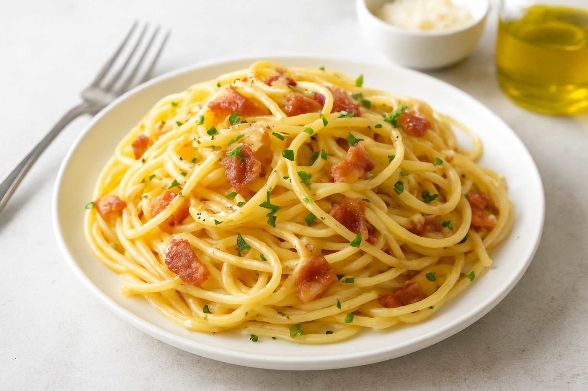

Odin Recipe
Home

"A NICE SPAGHETTI RECIPE"
Spaghetti Carbonara is a Roman pasta dish made with eggs, Pecorino Romano, pancetta (or guanciale), and freshly cracked black pepper. Creamy yet light, it’s the perfect balance of comfort and simplicity, made without cream but relying on silky egg and cheese for richness.
Ingredients
- 400g spaghetti
- 150g pancetta or guanciale, diced
- 3 large eggs
- 1 cup Pecorino Romano cheese, grated
- 2 cloves garlic (optional, lightly smashed)
- Freshly ground black pepper
- Salt, to taste
Steps
- Cook spaghetti in salted boiling water until al dente.
- Meanwhile, sauté pancetta in a skillet until crispy.
- Whisk together eggs, grated Pecorino Romano, and black pepper in a bowl.
- Drain pasta, reserving 1/2 cup of cooking water.
- Toss hot spaghetti with pancetta, then remove from heat.
- Quickly stir in egg mixture, adding pasta water as needed to create a creamy sauce.
- Serve immediately with extra cheese and pepper.